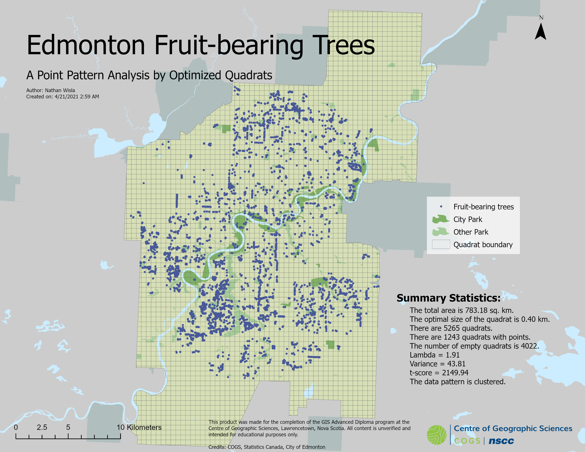
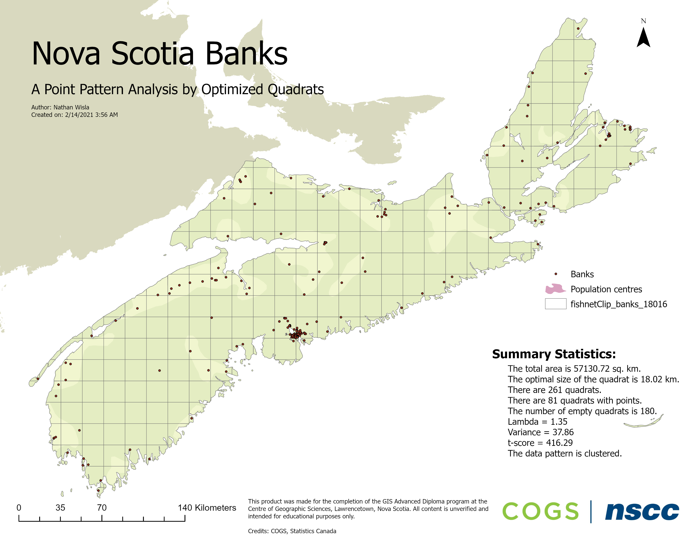
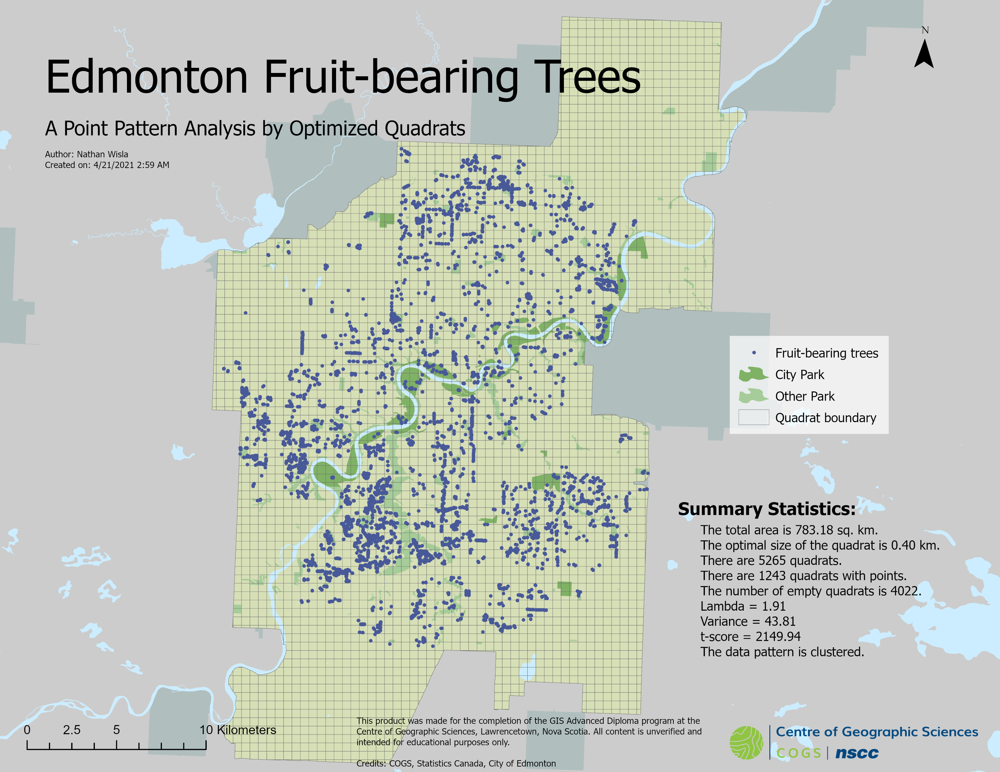
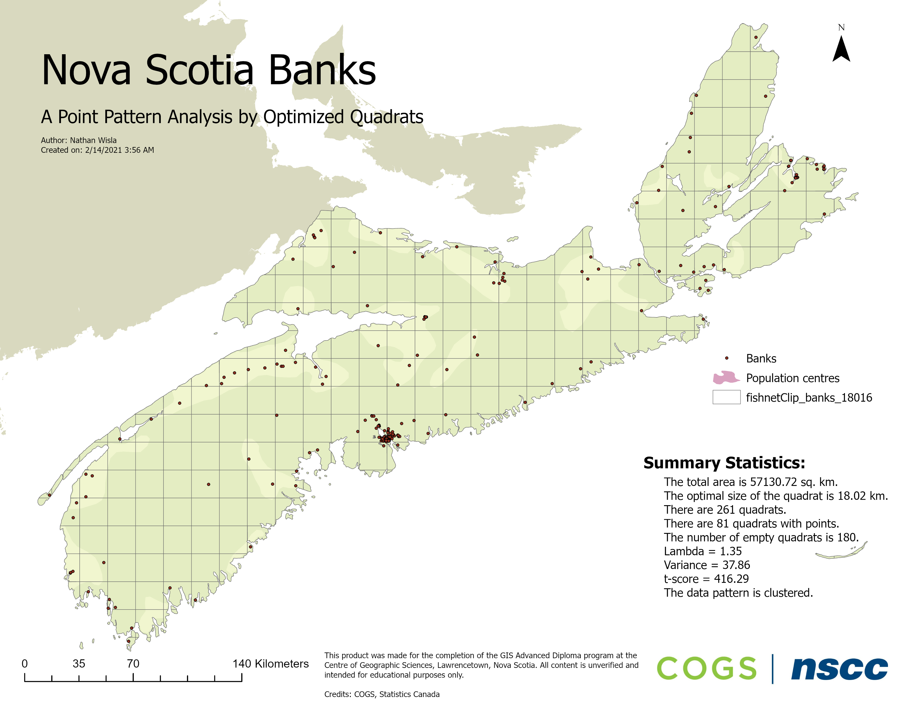
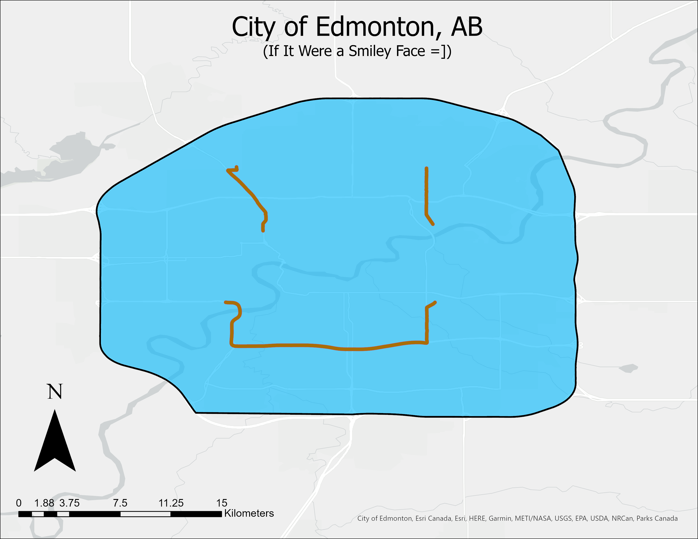
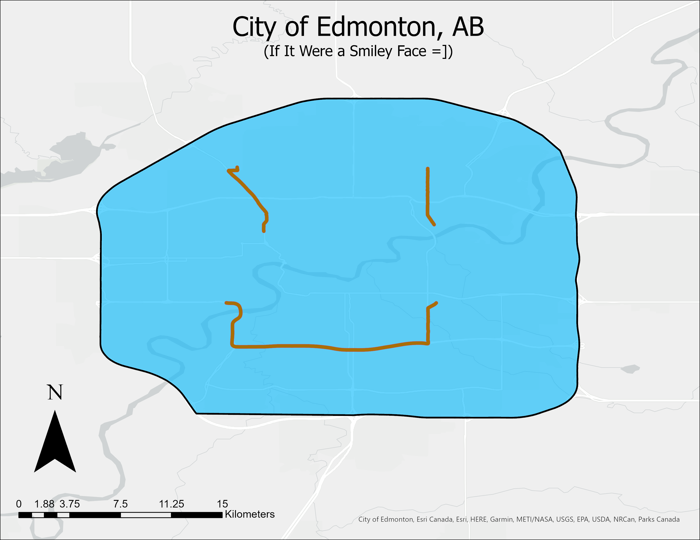

Nathan Wisla
I am an Experienced Data Analyst with a large background in GIS and mapping technologies. With an eye for design, I am an organized and proficient programmer and GIS analyst, who is constantly working with best practices and looking for ways to better optimize my workflow.
I am constantly tinkering with new and interesting technologies, and am an agile and creative problem solver with a degree in mathematics to prove it.
Check out my resume profile, cartography gallery, and completed published projects by clicking on the tabs at the top of the page! You can find my project repositories by following the projects link I am constantly updating projects on Twitter and LinkedIn as well.
Work Profile
-
Skills
- Excellent Communicator
- C# .NET, Java, Python, front-end web development, MatLab, R
- Database Management with Oracle Spatial, PL/SQL, SQLPlus, PostgreSQL/PostGIS, and SQLite
- Proficient with ArcGIS Desktop, ArcGIS Pro, QGIS, PostGIS, and PCI Geomatica
- Knowledge of Remote Sensing Systems: orthorectification, image enhancement, and classification
- Proficient with Adobe Photoshop, Illustrator, Premiere, and AfterEffects
-
Education
Advanced Diploma, Geographic Information Systems (GIS) | NSCC Centre of Geographic Sciences (COGS)
I Specialized in Geographic Information Systems (GIS) with a focus in Web Programming, Spatial Data Analytics and Geoprocessing.
In my time at COGS, I learned the fundamentals of using GIS, Relational Database Management (SQL), and honed my skills with Python and JavaScript, while learning data analytics with R, and fundamentals of remote sensing systems.- In JavaScript, I know how to program with the Leaflet, OpenLayers and ArcGIS APIs.
- In Python, ArcPy was extensively used for Geoprocessing.
- I am comfortable in using the ArcGIS Desktop, ArcGIS Pro, ArcGIS Online, QGIS and PCI Geomatica environments
Bachelor of Science With Distinction | University of Alberta
My major was mathematics and physics, with a history minor and a focus in computer science.
My time at the University of Alberta yielded me a large problem-solving toolbox:- As a mathematician I learned numerical and complex analysis, discrete mathematics, linear algebra, modeling with differential equations, and representation theory of finite groups.
- Physics taught me laboratory procedures, electricity and magnetism, quantum physics, and astrophysics.
- Through computer science, I know data structures, algorithms and numerical method
computation.
- Python
- Java
- MatLab
-
Work Experience
Benchmark Tester, Team Lead | KCC Tech
2019
I was a part of a contract from Rogers that tested the cellular network across Canada. Responsibilities included:
- Delivery of data collection services following a strict deadline
- Operation of a Test Mobile System (TEMS)
- Active operation of NMEA GPS routers installed in work vehicles
- Troubleshooting Windows and Android devices
- Interface communications between companies at ground level, interpersonal communication for crew morale
- Ensuring reasonable paid working hours based on deadline pushes and external delaying factors
Maintenance Service Worker | Parkland County
2018-2019
For the water and wastewater department at Parkland County, I was required to provide preventative maintenance on infrastructure Responsibilities included:
- Sampling data for Alberta Environment
- Alberta One Call Click-Before-You-Dig utility locating
- Blueprint and map analysis
- Construction site meetings and over-the-phone utility location consultation
- Workflow automation
- Data entry
Sports Data Analyst | Sporting Index (SPIN) Services Canada
2017-2019
For SPIN services, I traded live betting odds of major American sports matches, which scoped the NHL, NBA, MLS and MLB. Responsibilities included:
- Trading live betting odds and ensuring they were competitive with industry
- Manipulating live pricing models on the-fly-based on fluctuating price changes
- Multitasking by trading up to eight games at a time
- Bet settling
Teaching Assistant, Linear Algebra | University of Alberta
2016-2017
For the University of Alberta, I was the TA for all math first-year courses at Augustana Campus. Responsibilities included:
- Supporting the professor in-class while teaching lectures
- Effective communication of abstract ideas and concepts to struggling students
- Office hours for one-on-one and group tutoring sessions, tutoring also expanded into computer science and physics


 



 
